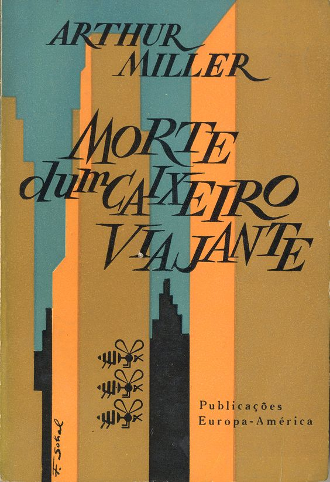
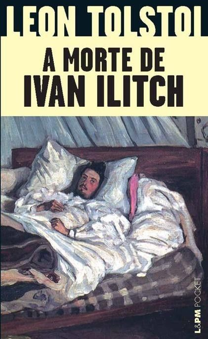

Epitáfio
2001 - Titãs
A representação da morte no teatro é uma expressão artística que atravessa séculos e culturas, desempenhando um papel fundamental na narrativa dramática e no diálogo com a audiência. A morte no teatro não é apenas um evento inevitável, mas uma ferramenta poderosa usada para explorar as complexidades da existência humana. Ela pode ser retratada de maneiras variadas, desde a tragédia impactante até a comédia satírica, passando por questões filosóficas e simbolismo profundo. Neste contexto, a morte no palco não apenas emociona, mas também desafia o público a refletir sobre temas existenciais e a própria condição humana. Este texto explora as diversas facetas da morte no teatro, destacando como essa representação pode cativar, provocar reflexões profundas e enriquecer a experiência teatral.

"Hamlet" de William Shakespeare: Uma das obras mais famosas da literatura e do teatro, "Hamlet" gira em torno do príncipe dinamarquês Hamlet, que busca vingar a morte de seu pai. A peça explora não apenas a morte física, mas também questões existenciais, como a vida após a morte e a incerteza da existência humana. A história de "Hamlet" se passa na Dinamarca e gira em torno do príncipe Hamlet, que está de luto pela morte súbita de seu pai, o rei Hamlet, e chocado com o rápido casamento de sua mãe, Gertrudes, com seu tio Claudius, que se torna o novo rei. Logo após a morte do rei, o fantasma do rei Hamlet aparece para seu filho e revela que foi assassinado por Cláudio. O fantasma pede a Hamlet que vingue sua morte, criando assim o conflito central da peça. A peça é conhecida por sua complexidade e profundidade psicológica. O personagem de Hamlet é muitas vezes retratado como um homem atormentado e indeciso, lutando com dilemas morais e emocionais. Ele é frequentemente citado por sua famosa solilóquio "Ser ou não ser", no qual ele contempla a natureza da existência e a moralidade de se vingar.
"A Morte de um Caixeiro Viajante" é uma peça de teatro escrita pelo renomado dramaturgo americano Arthur Miller. A peça estreou na Broadway em 1949 e é uma das obras mais importantes e influentes do teatro americano do século XX. Ela recebeu o Prêmio Pulitzer de Drama em 1949 e é frequentemente mencionada como uma das peças mais significativas do período pós-guerra nos Estados Unidos. A trama da peça gira em torno do personagem Willy Loman, um caixeiro viajante que luta para sustentar sua família e alcançar o "sonho americano". Willy acredita que o sucesso é alcançado por meio da venda e pela capacidade de impressionar os outros. No entanto, à medida que envelhece e enfrenta dificuldades financeiras, ele começa a questionar suas escolhas de vida e a perceber que seu sonho pode estar fora de alcance. A obra de Arthur Miller tem sido amplamente estudada e encenada em todo o mundo e continua a ser relevante, já que muitos dos temas que aborda permanecem pertinentes na sociedade contemporânea. Ela oferece uma análise perspicaz das pressões sociais, familiares e pessoais que moldam a vida dos indivíduos, bem como a perda de identidade e a busca desesperada por da vida significado.


“As Barcas” são um conjunto de peças de teatro escrita por Gil Vicente, um importante dramaturgo português do século XVI. Estas obras fazem parte de uma trilogia que também inclui "O Auto da Barca do Purgatório", “O auto da Barca do Inferno” e "O Auto da Barca da Glória". Gil Vicente é considerado o pai do teatro em Portugal e suas obras são uma parte fundamental da literatura e do teatro renascentista em língua portuguesa. Na peça, são explorados tópicos relacionados à morte, à avaliação das ações humanas e à justiça divina. Além disso, a obra faz uma crítica contundente à hipocrisia e às deficiências morais que eram características da sociedade da época. Gil Vicente utiliza o cenário sobrenatural das barcas e do barqueiro como um meio para aprofundar a reflexão sobre questões humanas e sociais, empregando diálogos humorísticos e situações absurdas com o intuito de gerar comédia.
A peça "Auto da Barca do Inferno" foi escrita por volta de 1517 e é uma sátira moral e religiosa que aborda a questão da vida após a morte e o destino das almas dos falecidos. A trama se desenrola em torno da chegada de diversos personagens à beira de um rio, onde duas barcas aguardam para levá-las a seus destinos finais: uma para o Céu e outra para o Inferno. Os personagens que aparecem na peça são representantes dos diversos estratos da sociedade da época, desde o clero até os camponeses, passando por nobres, comerciantes e outros. Cada personagem é submetido a um julgamento por um Anjo e um Diabo, que decide se a pessoa irá para o Céu ou para o Inferno, com base em suas ações e comportamento em vida.
A morte é um tema profundamente explorado na música ao longo da história da humanidade. Músicos de todos os gêneros e culturas têm usado a música como uma forma de expressar seus sentimentos e reflexões sobre a mortalidade. A música oferece um espaço seguro e catártico para abordar a complexidade de emoções que cercam a morte, desde a tristeza e a perda até a celebração da vida e da memória daqueles que partiram. É retratada de diversas maneiras, seja por meio de letras poéticas, melodias emotivas ou arranjos que evocam uma sensação de transcendência. Muitas canções homenageiam artistas e figuras públicas que nos deixaram, enquanto outras exploram temas filosóficos e existenciais, questionando o significado da vida e o mistério da morte.
"Wake Me Up When September Ends" é uma canção da banda de punk rock americana Green Day. Ela faz parte do
álbum "American Idiot", lançado em 2004. A música foi escrita pelo vocalista e guitarrista da banda,
Billie Joe Armstrong.
A canção é uma homenagem ao pai de Billie Joe, que faleceu quando ele tinha apenas 10 anos. O mês de
setembro tem um significado especial para ele, pois foi o mês do falecimento de seu pai.
A música expressa
os sentimentos de luto, perda e saudade, e muitos ouvintes a interpretam como uma reflexão sobre a
passagem do tempo e a maneira como as pessoas lidam com a dor e a ausência.

2004 - Green Day

2001 - Titãs
"Epitáfio" é uma música da banda brasileira Titãs, lançada em 2001 no álbum "A Melhor Banda de Todos os
Tempos da Última Semana". A canção é uma das mais conhecidas e icônicas do grupo e é frequentemente
lembrada como um dos maiores sucessos da banda.
A letra de "Epitáfio" é notável por seu tom melancólico e reflexivo. A canção aborda temas como a
passagem
do tempo, a efemeridade da vida e a inevitabilidade da morte.
A música também faz referências a diferentes
momentos da vida, como o nascimento, a infância, a juventude e a velhice, indicando que todos esses
empreendimentos são efêmeros e passageiros.
A letra destaca a ideia de que não se deve deixar para depois
o que pode ser feito hoje, pois o tempo não espera por ninguém.
A música "Canto para Minha Morte" é uma canção da banda brasileira de rock progressivo Secos & Molhados, lançada em seu álbum de estreia homônimo, lançado em 1973. A banda Secos & Molhados era conhecida por sua abordagem teatral e visualmente impactante, bem como por suas letras poéticas e melódicas. A canção é uma das mais famosas da banda e foi escrita por Mário Lins e João Ricardo, que também foi o vocalista da banda. A música apresenta uma atmosfera sombria e introspectiva, com letras que exploram temas de mortalidade, solidão e reflexão sobre a vida e a morte. A voz emotiva de João Ricardo e a instrumentação peculiar da banda afetada para criar uma experiência musical única.

1975 - Secos & Molhados
A morte é um tema profundamente influente na história da arte, desempenhando um papel significativo na evolução das obras de diversos pintores ao longo dos séculos. Este elemento da experiência humana despertou uma ampla gama de emoções e reflexões nas mentes criativas, inspirando uma rica variedade de representações artísticas. A morte tem sido retratada de muitas maneiras, desde cenas fúnebres até a personificação da morte como uma figura mitológica, permitindo aos pintores explorar não apenas o inevitável fim da vida, mas também temas como a mortalidade, a transcendência, o sofrimento e a beleza efêmera. Neste contexto, veja abaixo algumas dessas pinturas:


A morte é uma das temáticas mais profundas e onipresentes na literatura, permeando as páginas de inúmeras obras ao longo da história da humanidade. Desde os épicos da antiguidade até os romances contemporâneos, a morte é um elemento intrínseco à condição humana, que gera reflexões, medos e questionamentos profundos. Através da literatura, escritores exploram a complexidade da morte, desde sua inevitabilidade até suas implicações emocionais, filosóficas e existenciais. A maneira como a morte é retratada na literatura varia enormemente, abrangendo desde representações sombrias e aterrorizantes até abordagens mais contemplativas e poéticas. Este texto explorará a presença da morte na literatura, analisando como diferentes autores e culturas a interpretaram ao longo do tempo, e como ela desempenha um papel fundamental na construção de narrativas, personagens e temas literários.
"A Morte de Ivan Ilitch" é uma novela escrita pelo renomado autor russo Lev Tolstói, publicada pela primeira vez em 1886. A obra é considerada uma das maiores realizações da literatura russa e é frequentemente elogiada por sua profunda exploração da condição humana, especialmente em relação à mortalidade e à busca de significado na vida. A história gira em torno de Ivan Ilitch Golovín, um juiz de uma pequena cidade na Rússia do século XIX. Ivan Ilitch é um homem comum, preocupado principalmente em seguir as convenções sociais e subir na posição burocrática. Ele se casa com uma mulher chamada Praskovya, mais por conveniência do que por amor verdadeiro, e embarca em uma carreira jurídica que parece trazer estabilidade e respeito à sua vida. No entanto, a vida de Ivan Ilitch toma um rumo inesperado quando ele desenvolve uma doença misteriosa e debilitante. Conforme sua saúde se deteriora, ele é chamado a enfrentar sua própria mortalidade e a natureza superficial de sua existência. O sofrimento físico e emocional de Ivan Ilitch o leva a questionar o significado da vida e a enfrentar a alienação que sente dos outros, especialmente aqueles que o cercam, que são incapazes de compreender ou compartilhar sua angústia. Essa novela é uma das obras mais estudadas e científicas de Tolstói e continua a ser uma fonte de inspiração e reflexão sobre a condição humana e a busca pelo sentido da vida.


"A Morte é um Dia que Vale a Pena Viver" é um livro escrito pela Dra. Ana Cláudia Quintana Arantes, uma
médica especializada em cuidados paliativos. Neste livro, a autora compartilha suas experiências e
reflexões sobre a morte e como podemos encará-la de uma maneira mais significativa.
O título sugere que,
apesar de nossa aversão natural à morte, é possível encontrar valor e propósito na experiência da morte,
tanto para aqueles que estão morrendo quanto para aqueles que cuidam deles.
O livro aborda diversos aspectos relacionados à morte, incluindo histórias de pacientes que o autor
acompanhou ao longo de sua carreira, suas próprias experiências pessoais e os desafios enfrentados pelos
profissionais de saúde que lidam com cuidados paliativos.
Uma Dra. Ana Cláudia Quintana Arantes enfatiza
a importância de proporcionar conforto, compaixão e dignidade aos pacientes terminais, ajudando-os a
enfrentar a morte de maneira menos dolorosa e mais serena.
Além disso, o livro também discute como a sociedade muitas vezes evita falar sobre a morte e como isso pode ser prejudicial. A autora argumenta que, ao encarar a morte de frente e conversar abertamente sobre ela, podemos aprender a apreciar mais a vida e a criar relações mais profundas e significativas com os outros.
"A Morte é uma Festa" é um romance escrito pelo autor brasileiro João Paulo Cuenca. Publicado em 2017, o livro aborda de maneira singular o tema da morte, explorando-o sob uma perspectiva poética e filosófica. A obra é uma reflexão sobre a efemeridade da vida e como as pessoas lidam com a inevitabilidade da morte. >A trama se desenrola no Rio de Janeiro e segue um narrador sem nome que, após a morte de seu avô, inicia uma busca pela compreensão do que significa a morte e como a sociedade contemporânea lida com ela. Nessa jornada, ele encontra personagens peculiares e se envolve em situações intrigantes, misturando a realidade com a imaginação. O livro mescla elementos de diferentes gêneros literários, incluindo o realismo mágico, a filosofia existencialista e a poesia, criando uma narrativa multifacetada e desafiadora. Cuenca utiliza uma linguagem rica e simbólica para explorar questões profundas sobre a vida, a morte, a memória e a identidade. Além disso, “A Morte é uma Festa” também aborda a influência da cultura contemporânea, como as redes sociais e a cultura digital, na mesma maneira como as pessoas enfrentam a morte e lidam com a perda. O livro lança luz sobre como a sociedade moderna muitas vezes busca evitar ou mascarar a realidade da morte, ao mesmo tempo em que ressalta a importância de aceitar a finitude da vida como parte integrante da existência humana.